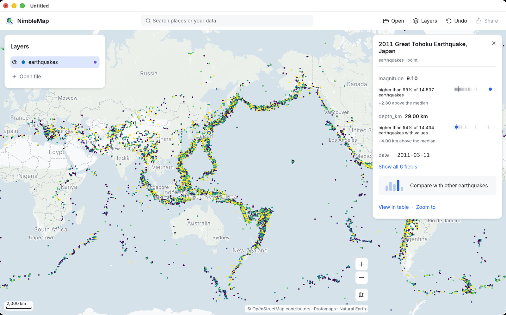
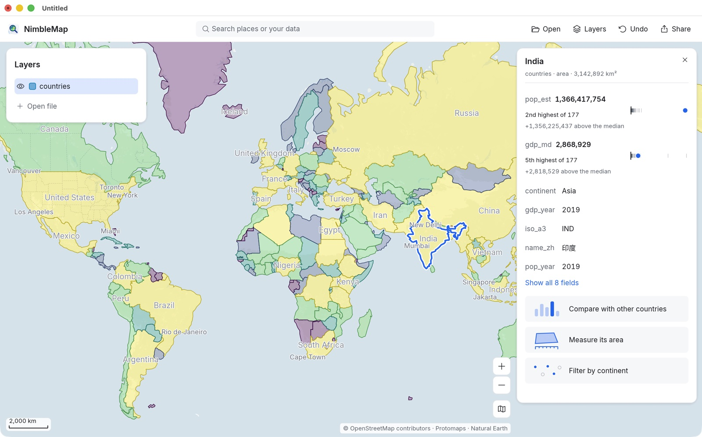
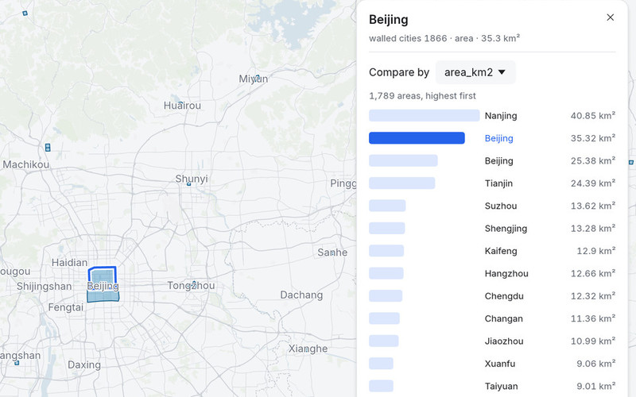
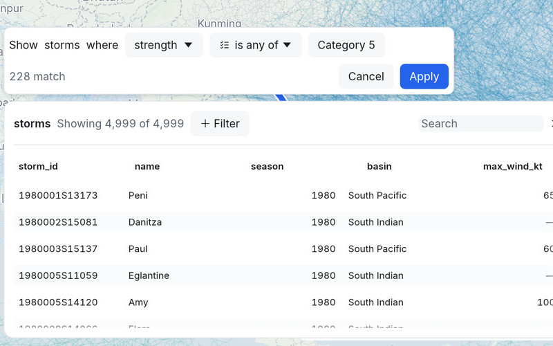

Tifones y huracanes
4999 trayectorias de tormentas desde 1980. Los vientos de 170 nudos de Haiyan superan los del 99 % de 4547 tormentas.
IBTrACS v04r01Gratis para Mac
Ocho mapas incluidos: tifones, terremotos, olas de calor y más. Después, trae los tuyos.
NimbleMap necesita un Mac con Apple silicon. Hay una versión para Windows en camino.
Gratis · unos 74 MB · macOS 13 o posterior · Apple silicon · funciona sin conexión
La primera vez, macOS te pide que la autorices: cómo abrirla


Grandes terremotos desde 1900, coloreados por magnitud
Incluidos
4999 trayectorias de tormentas desde 1980. Los vientos de 170 nudos de Haiyan superan los del 99 % de 4547 tormentas.
IBTrACS v04r01
1789 murallas de ciudades. La de Pekín encerraba 35.3 km², más que el 99 % de ellas.
Xue et al. 2021 · CC BY 4.0
Pulsa Play (Reproducir) y mira cómo el calor se desplaza por el mundo.
Copernicus GDO / JRC · CC BY 4.0También incluye: terremotos desde 1900, volcanes, aeropuertos, centrales eléctricas, y ciudades, países y elevación del mundo.
Tus datos
Suelta una hoja de cálculo de lugares, el recorrido GPX de tu última carrera o una imagen de satélite. Cae en su sitio, sin configurar nada.
Cómo funciona

Haz clic en cualquier cosa. Mira qué es y cómo se compara.

Cada número sale de todos tus datos, no solo de lo que se ve en pantalla.

Cada paso se puede deshacer y cada resultado explica cómo se obtuvo.
Compartir
Añade título, leyenda y créditos. Exporta para una diapositiva, un informe o una publicación.

NimbleMap Pro: pregunta a tu mapa con palabras normales. Gratis con una cuenta; llega en la próxima versión.
Qué añade Pro →NimbleMap necesita un Mac con Apple silicon. Hay una versión para Windows en camino.
Gratis · unos 74 MB · macOS 13 o posterior · Apple silicon · funciona sin conexión
La primera vez, macOS te pide que la autorices: cómo abrirla
NimbleMap está basada en RustGIS.